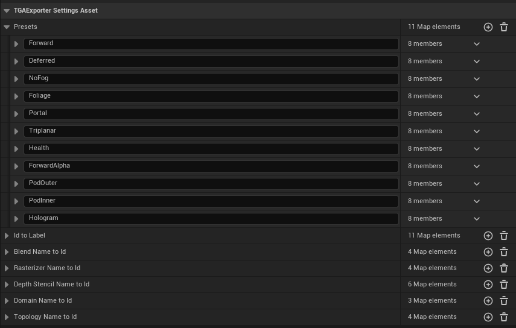
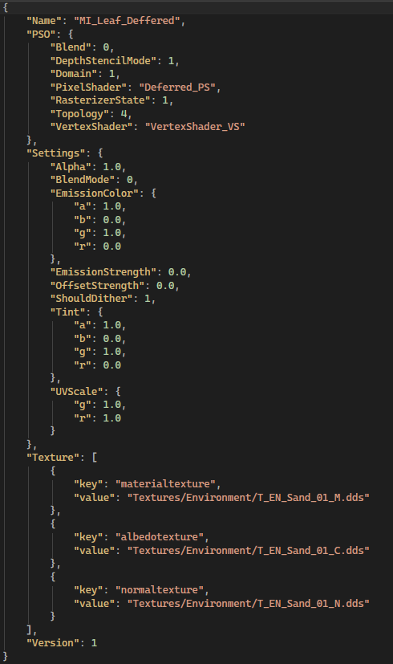
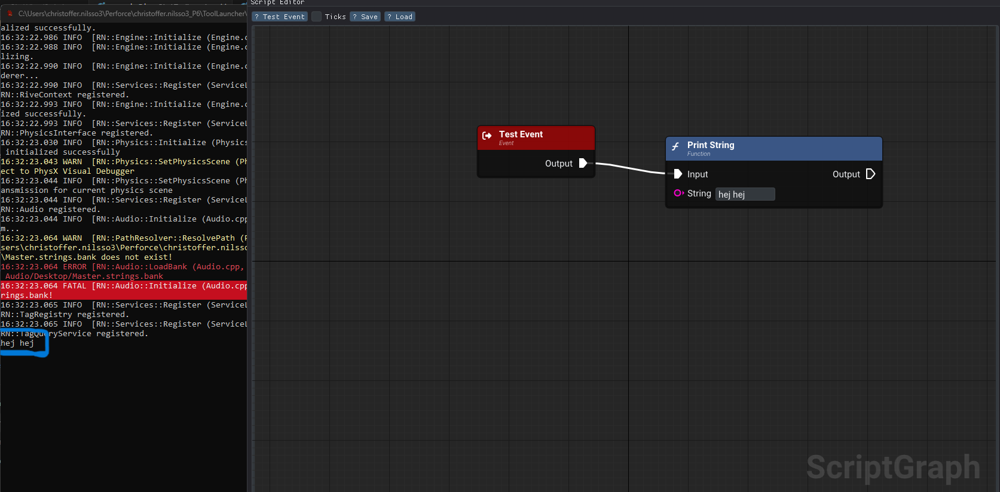
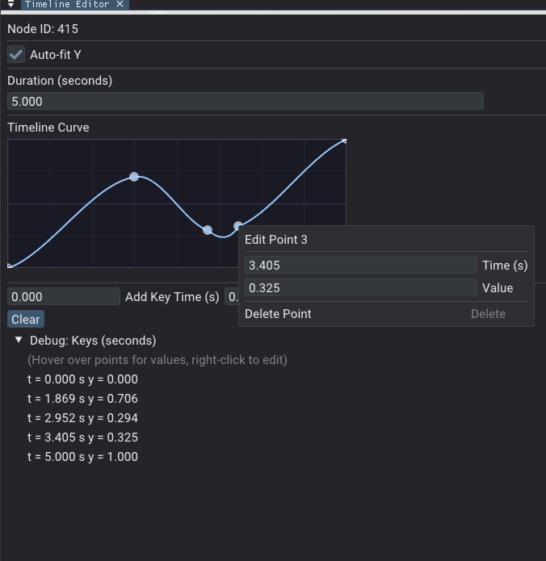

Project 6 – Aliens Stole My Sh!#
- Reference game
- Spyro
- Genre
- Third-person adventure
- Duration
- 17 weeks (half time)
- Team size
- 21
- Engine
- Group custom engine (C++, DX11)
Summary
For this project, I worked on particle system refactoring, improvements to the Unreal export plugin, and a visual scripting system with an editor.
The particle system refactoring was a complete overhaul of what we had. The previous system was very basic and only had movement in one direction. The new system supports better particle falloffs and ribbon particles.
The improvement to the Unreal export plugin was changing it from using the shader preset selector I made in Project 5 as a component, to instead depend on material parameters. When a material is exported, it checks against a data asset based on its parameters.
I also worked on implementing the visual scripting system and an editor that level designers could use.
Particle System
Refactoring
The particle system needed refactoring because the version we had from Project Spite was very basic and only supported movement in one direction. To have better VFX, we needed support for ribbon particles and a more flexible system overall.
To solve this, I restructured the particle system to be more modular. Most of the system had to be redesigned. I changed it to use inheritance so that one particle system could contain multiple emitters of different types, like ribbons and regular particles.
I also improved the base emitter settings to support more falloffs and allow values to use curves instead of just fixed values. This made the system more flexible and easier to work with for VFX.
Ribbons
Implementing ribbon particles was more challenging than regular particles, since there was limited information available on how to build them.
One important difference is that a vertex is not just a position. Instead, the ribbon is built from segments between vertices, where each segment forms part of the ribbon. A width value is then used to define the size of the ribbon.
Unreal Exporter
I also worked on the Unreal exporter plugin during this project because it didn’t work as I fully intended.


In the previous version, the shader preset selector had to be used as a component on an actor, which caused problems when there were multiple materials. I found that I could get data from material parameters in C++, so I changed the setup. For the material PSO, it still used the shader preset selector data asset, but now used a scalar parameter as an ID instead.
Another developer changed it so that for VFX, a material could have multiple textures, and as long as the textures were in the compiled shader for that material, it would load correctly. Based on that, I changed it so all our materials were loaded in the same way.
Now the TA could add texture parameters in Unreal materials, and they would be exported and used in our engine. The way I did it was to take the names of all texture parameters and save them so I could create the material JSON. The only important names were albedo, ORM, normal, and FX textures, which needed to be correct.
The main reason I made these changes was that I noticed there were textures in our material JSONs that we didn’t have in our engine. To make this easier to find, I removed the fallback that gave default textures when it couldn’t find them, because that made Unreal and our engine look very different from each other.
Visual Scripting
We had a course in visual scripting, so I already had basic nodes when I implemented it in our game engine. Since the system needed to support different data types, I worked with wildcard pins so I wouldn’t need separate nodes for vectors and scalars.


One of the main features the level designers requested was a timeline node, so I implemented one using Unreal’s timeline as reference. Since it is a latent node, it caused some issues with threading, like threads still running at shutdown, but I got it working in the end.
Because the timeline node required editing of curve values, it also required an editor. The curve editor I had from the particle system was too specialized, so I created a more general ImGui curve widget for scripting that uses the same flow as ImGui with begin/end.
To make it easier to control when scripts should run and update, I also implemented a script graph manager. This gave us one place that registers data types in the type manager and one place to control execution. It prevented begin events from running early and made it easier to trigger specific events.
Conclusion
During this project, what I take with me is that it never goes as planned. The plan was that I would work with visual scripting and have a good implementation for the next project. But as I wrote, I mostly worked on the particle system refactoring and some other bugs and fixes.
That made it so visual scripting only got a basic implementation instead of having a fully working system for Project 7.